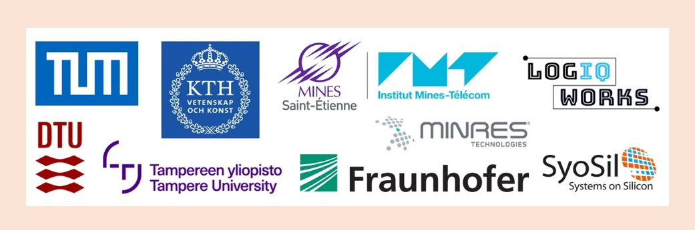

First Edu4Chip Summer School on Chip Design held at DTU
11-22 August 2025
The very first Edu4Chip Summer School, held at DTU, was a completely sold-out event that introduced 45 bachelor’s and master’s students from eight European universities to the full chip design process—from specification through design, implementation, verification, and testing.
Over the week, students participated in lectures, hands-on sessions, keynote speeches, company presentations, and prepared group presentations. They also got opportunities to network, exchange ideas, and learn more about industry and academic strengths across Europe.
The event was praised by both participants and organisers: survey responses highlighted satisfaction both socially and academically.
Looking ahead, the next Edu4Chip Summer School will be held in France.

Edu4Chip 2-year meeting held in Copenhagen
20-21 August 2025
The 2-year Edu4Chip project meeting was held in Copenhagen on August 20-21 2025 in parallel to the first Edu4Chip Summer School on Chip Desing, bringing together the partners from across Europe.
The event included updates on various work packages, discussions and planning for the first test chip tapeout, and plans for future activities. Hosted by the Technical University of Denmark, the meeting fostered productive conversations on project developments, emphasizing progress in chip design education and collaboration.
The public deliverable "Marketing materials" is now available
24 June 2025
The Edu4Chip consortium has released its public deliverable on "Marketing materials," describing the marketing strategies, communication efforts, and materials developed to promote the new programs and specilizations, as well as the project.
The deliverable covers the material unified visual identity, online presence, printable brochures and banners, and targeted promotional efforts for the upcoming summer school. It also details the consortium members participation in academic and industry events to attract students and raise visibility.
The marketing materials referenced in the deliverable are available in this webpage. Please follow the link below.
 Photo credit: Hanne Kokkegård.
Photo credit: Hanne Kokkegård.
Edu4Chip presented its offering to students at DTU Chip Day
8 April 2025
DTU Chip Day 2025 gathered students, researchers, and industry to celebrate chip design and raise awareness of its importance for Europe’s digital future. Edu4Chip was present with a stand and a dedicated presentation, showcasing its educational offering to students.
The event promoted student engagement in chip design and highlighted opportunities for hands-on learning and collaboration with industry through internships and thesis projects. Edu4Chip’s participation helped inspire the next generation of chip designers and promote the program.
The public deliverable "Curriculum of Master Programs and Specializations in Edu4Chip" is now available
28 March 2025
The Edu4Chip consortium has released a public deliverable detailing the curriculum structure of the Master’s programs and specializations in chip design. Developed by TUM, DTU, KTH, TAU, and IMT, the report outlines how each partner integrates the Edu4Chip concept into their academic offerings.
The deliverable details competence-based course design, practical lab experiences including chip tape-outs, and international mobility options for students. It also includes a catalogue of Lifelong Learning courses aimed at continuous education for industry professionals.
Photo credit: Hanne Kokkegård.
Edu4Chip supports the Tiny Tapeout chip design workshop at DTU
15 February 2025
With over 80 participants, DTU organized and hosted a four-hour Tiny Tapeout chip design workshop aiming to sparked interest among students and professionals alike. The hands-on event introduced participants to key principles of chip architecture and design using open-source tools.
The workshop was partially supported by the Edu4Chip project and aligns with its mission to raise awareness, attacht student, and build capacity in advanced chip design. Participants had the opportunity to create and simulate their own digital circuits in a fun, collaborative, and engaging event.
Edu4Chip 1-year workshop held in Tampere
8-9 October 2024
The 1-year Edu4Chip project meeting was held in Tampere on October 8-9 2024, bringing together the partners from across Europe.
The event featured updates on various work packages, discussions on the common chip tempate development, as well as a dedicated workshop on design and verification tools. Hosted by Tampere University, the meeting facilitated many productive discussions on project developments, with a focus on advancing chip design education and collaboration.
The public deliverable "The Program Concept" is now availble
30 September 2024
The Edu4Chip consortium has now published the public deliverable outlining the program concept. This detailed report introduces the structure of the aligned two-year master’s program in advanced chip design, offered by TUM, DTU, KTH, TAU, and IMT.
The deliverable covers the main program's structure in the plans for implementation at the partner universities. It highlights the unique strengths each university brings to the curriculum and the opportunities for student exchanges across Europe.
Edu4Chip presented at the FSiC 2024 conference
20 June 2024
Associate Professor Luca Pezzarossa from the Technical Univeristy of Denmark (DTU) recently presented the Edu4Chip project at the Free Silicon Conference (FSiC) 2024 in Paris. His talk, titled "From Theory to Tape-Out: Chip Design Education with Edu4Chip," highlighted the initiative's ambitious goal of bringing together five European universities to develop master’s programs focused on giving students hands-on experience in chip design, including real-world tape-out opportunities. For more details, visit the FSiC conference page dedicated to the talk or watch the video of the talk.
Open-source verification presented at the FSiC 2024 conference
19 June 2024
Stefano Minigutti from SyoSil presented the efforts to develop a framwork for open-source verification of digital ASIC/FPGA circuits at the Free Silicon Conference (FSiC) 2024 in Paris. The framework integrates open-source tools like Python-based UVM libraries into the semiconductor verification process, promoting accessibility, cost-efficiency, and allowing free use in education. This effort was part of the development of the new verification course at the Technical Univeristy of Denmark (DTU). The course aims to enhance the skills of students and professionals in chip design through practical, open-source solutions. This initiative is a key component of Edu4Chip's goals to modernize education in this field.
Edu4Chip is on GitHub!
1 May 2024
The Edu4Chip GitHub organization of repositories is now live and will serve as a collaborative space for students, researchers, and industry collaborators. It will hold the common chip design templates, code, and design files for the digital, analog, and mixed-signal integrated circuits, as well as documentation and tutorials to guide users through the entire chip design flow. Explore the repository and join our growing community of future chip designers.
Edu4Chip featured in SoC Hub article
12 December 2023
We are excited to share that the Edu4Chip project was recently featured in an article published by SoC Hub, highlighting the initiative's efforts to advance European chip design education. The piece details how Edu4Chip is creating master’s programs across several European universities, equipping students with practical skills and hands-on experience in chip design, including tape-out projects. This approach directly supports the EU Chips Act's goal of strengthening the semiconductor workforce in Europe.
Edu4Chip kick-off workshop held in Munich
25 October 2023
The kick-off workshop for the Edu4Chip program took place in Munich on 25 October 2023, hosted by the Technical University of Munich (TUM). This event marked the first time all partners met in person to discuss the program’s objectives and future collaboration. The workshop set the stage for the program’s next steps, with participants focusing on course alignment and the hands-on chip design projects that will be central to the students' learning experience.